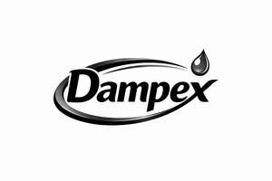

Trade Mark Journal No.2026/009 27 February 2026
UK00004337468 8 February 2026 (1,3,5,11)
Mark 1
Mark 2

- Class 1
- Chemical preparations for absorbing moisture; moisture-absorbing chemicals; chemical preparations for humidity control; desiccants; chemical substances for preventing damp; chemical dehumidifying preparations, namely gels and powdered or flaked solids in the nature of desiccants; chemical dehumidifying preparations sold in pouches and containers for moisture absorption and humidity control, including for the prevention of damp, condensation, mould and mildew caused by excess moisture.
- Class 3
- Air fresheners; deodorisers for rooms; scented household preparations; air fragrancing preparations; room fragrancing preparations; air fragrancing preparations for fragrancing of ambient air; deodorising preparations for household use; scented preparations for reducing odours in enclosed spaces.
- Class 5
- Dehumidifying preparations for household use; moisture absorbing preparations for domestic environments; preparations for reducing humidity; preparations for preventing damp, mould and condensation in indoor spaces; air deodorizing preparations for deodorizing ambient air; air purifying preparations for purifying ambient air; disposable dehumidifying preparations for household use.
- Class 11
- Dehumidifiers; dehumidifiers for household use; passive dehumidifiers; portable dehumidifiers; dehumidifying apparatus for household use, namely passive dehumidifiers for the removal of moisture; dehumidifying apparatus, namely passive dehumidifiers for the removal or prevention of odour caused by excess moisture; apparatus for dehumidifying ambient air, namely passive apparatus; filters for dehumidifiers; parts and fittings for the aforesaid goods.
NEXA BRANDS LTD